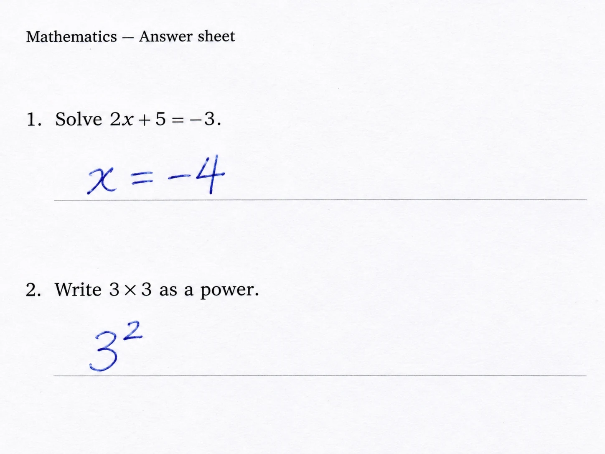

返回學校試用
·
集中核對全班疑點
中一數學 · 示例答卷
核對手寫疑點
點原稿上的方框，放大筆跡並核對識別文字。這張虛構答卷和預設識別結果供試用，修改保存在目前瀏覽器。
學生原稿
開啟整頁原稿

識別核對
第 1 題 · 負號
第 2 題 · 指數
批改這份答卷
示例按已核對的答案計分；老師可逐題調整。
確認示例評分
返回核對原稿
重新試用這份示例
請啟用 JavaScript 核對這份示例答卷。